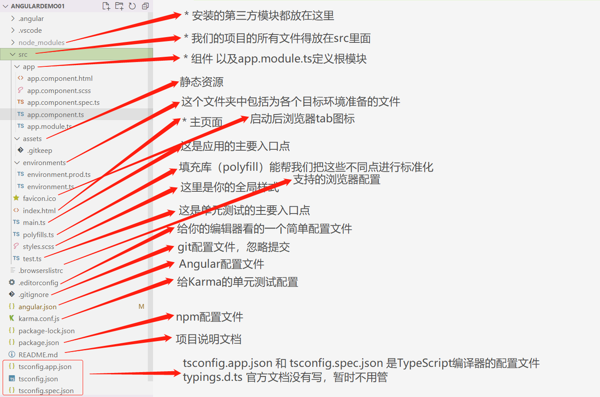

# Angular 环境搭建与项目创建
安装 nodejs
C:\Users\jalchu>node -v # v14.18.0
npm 可能安装失败，可以使用 cnpm 替代 npm (该步骤可选)
C:\Users\jalchu>npm install -g cnpm --registry=https://registry.npm.taobao.org
C:\Users\jalchu>cnpm -v # 6.14.15
C:\Users\jalchu>npm -v # cnpm@8.3.0
使用 npm/cnpm 命令安装 angular/cli (只需要安装一次)
以下两个选择一个即可，注意是全局安装 angular 脚手架
C:\Users\jalchu>npm install -g @angular/cli # 使用 npm
C:\Users\jalchu>cnpm install -g @angular/cli # 使用 cnpm
# 安装过程开始会问你是否想分享匿名数据和 Angular Team，可以选 yes，也可以选 no# 选 yes 的话后期可以通过 ng analytics disable --global 命令 disable 这个 featureD:\angular> npm install -g @angular/cli
...Package Version
------------------------------------------------------
@angular-devkit/architect 0.1401.2 (cli-only)
@angular-devkit/core 14.1.2 (cli-only)
@angular-devkit/schematics 14.1.2 (cli-only)
@schematics/angular 14.1.2 (cli-only)
创建项目
# 进入 D 盘C:\Users\jalchu>d:
# 进入我们预先建好的 angular 练习目录D:\>cd angular
# 通过脚手架创建新项目# 下面命令默认会安装依赖包，如果想先不安装，可以执行 “ng new 项目名 --skip-install”# Would you like to add Angular routing，先选 no，不加路由# Which stylesheet format would you like to use，这里看你的需要# 打印 Packages installed successfully 说明包安装成功# 注意 windows 可能会有 CRLF 替换的警告，没关系，LF 是 unix 换行符号，windows 是回车 + 换行，所以是 CR+LF=CRLFD:\angular>ng new angulardemo01
# 进入项目目录D:\angular>cd angulardemo01
# 安装依赖包D:\angular\angulardemo01>npm install
# 项目创建完毕后可以使用下面命令启动该项目# 问是否 share 数据，如果 share 后期可以使用 ng analytics disable 关掉# 开启成功打印 “Compiled successfully.”, 浏览器可以访问 http://localhost:4200/D:\angular\angulardemo01>ng serve --open
Angular 开发工具：项目创建好以后，我们可以把项目导入到一个开发工具里，比如 vscode。
# Angular 目录结构分析、核心文件分析以及创建使用组件
完整项目结构说明

核心文件：app.module.ts 文件说明
app.module.ts文件说明 // 这个文件是 Angular 根模块，告诉 Angular 如何组装应用// Angular 核心模块import { NgModule } from '@angular/core';
// BrowserModule，浏览器解析的模块import { BrowserModule } from '@angular/platform-browser';
// 根组件import { AppComponent } from './app.component';
// @NgModule 装饰器，@NgModule 接受一个元数据对象，告诉 Angular 如何编译和启动应用@NgModule({
declarations: [ // 配置当前项目运行的组件
AppComponent
],
imports: [ // 配置当前模块运行依赖的其他模块
BrowserModule
],
providers: [], // 配置项目所需要的服务
bootstrap: [AppComponent] // 指定应用的主视图（称为根组件）通过引导根 AppModule 来启动应用，这里一般写的是根组件
})
// 根模块不需要导出任何东西，因为其他组件不需要导入根模块export class AppModule { }
核心文件：app.component.ts 文件说明
app.component.ts文件说明 // 引入核心模块里面的 Componentimport { Component } from '@angular/core';
@Component({
selector: 'app-root', // 使用这个而组建的名称
templateUrl: './app.component.html', // html
styleUrls: ['./app.component.scss'] // css
})
export class AppComponent {
title = 'angulardemo01'; // 定义属性
constructor(){
// 构造函数}}创建一个组件
D:\angular\angulardemo01>ng g component components/news
CREATE src/app/components/news/news.component.html (19 bytes)
CREATE src/app/components/news/news.component.spec.ts (585 bytes)
CREATE src/app/components/news/news.component.ts (268 bytes)
CREATE src/app/components/news/news.component.scss (0 bytes)
UPDATE src/app/app.module.ts (985 bytes)
D:\angular\angulardemo01>ng g component components/header
D:\angular\angulardemo01>ng g component components/home
尝试在 app.component.html 中引入这些组件即可
<app-home></app-home> <app-header></app-header> <app-news></app-news>